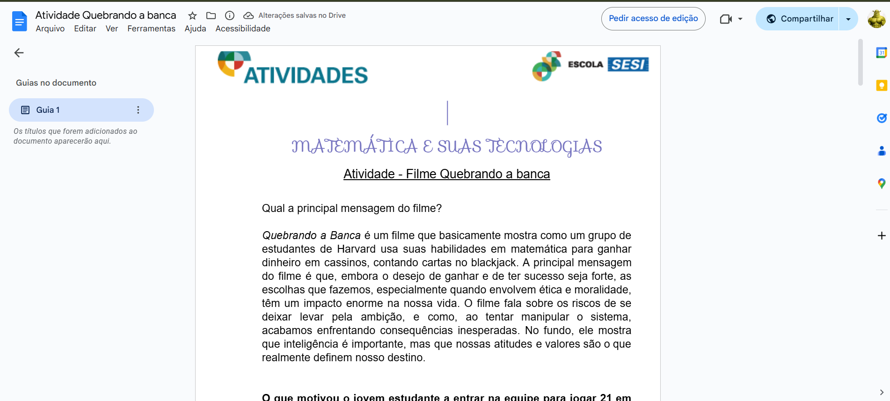

1° Trimestre

Jogo Probabilidade
O objetivo dessa atividade foi elaborar um jogo de matemática utilizando os conceitos de probabilidade e/ou análise combinatória, online ou físico.
Competências e habilidades: C5 - H30 e H31.
Link: Apresentação

Criando a Banca
Nessa atividade tivemos como objetivo responder uma série de perguntas sobre o filme "Quebrando a banca", no final criamos um roteiro curto de um filme que contenha algum conteúdo de matemática.
Competências e habilidades: C5 - H31 e H32.
Link: Apresentação